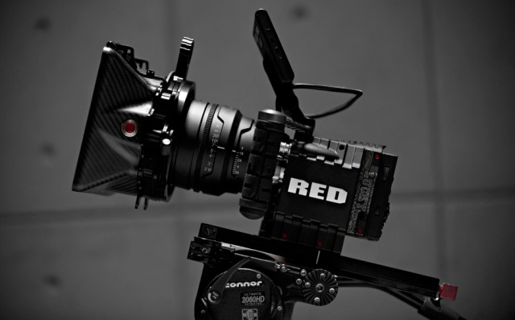

[EDIT IN PROGRESS]
Webcams can only go so far in terms of quality and other features, so in this section we'll cover other types of RGB cameras. Choosing something in this realm usually means you need something with higher image quality, or lower latency, or higher resolution, or some other custom need. To put a finer point on it, I'm bucketing these types of cameras into this section:
Besides the increased price, the primary barrier to entry with these cameras is that they aren't as easy to plug in via USB and start working directly with the image, as with UVC webcams. Many cameras in this space either need a special driver or SDK that must be integrated into your software project. Cameras that don't have that option will typically output over some form of standard video cable like HDMI or SDI. HDMI and SDI can then be captured by specialized capture devices that can either be a specialized PCI capture card installed in a desktop, or they can connect over USB.
One of the most common ones types for interactive installations is the DSLR, usually chosen for its improved image quality over a standard webcam. DSLR's have become much easier to integrate over the last few years, but they still have some challenges depending on the particular model.
Capturing with a DSLR all day would be great because you'll get the best image for the price range, but those cameras are not always designed to be left on for extended durations. DSLR's can easily suffer from heating issues or auto-shutoff if left on for too long. A more robust production camera or a solid DV Cam is more ideal for long running installations that require a really good image (and can't use a webcam for whatever reason), but make sure to do a lengthy test run before installing. Note: if tested and implemented with care, some DSLR's can perform just fine for long installation runs (one person has mentioned one running for 6 months at 7 hours a day with no issues).
DSLR's may need their SDK and some software massaging to work correctly in your environment, although some offer hit or miss HDMI output that would require a capture card. Canon's EDSDK for example has been ported to openFrameworks for easy access, and Magic Lantern Firmware.
Other high end cameras also enjoy the benefits of working with cables that were designed with long cable runs in mind. Webcams over really long (10m/30ft+) USB cables can cause jitter or some other funky consistency issues, so again...test before installing whenever possible. Production quality cameras can work over HD-SDI for fairly long runs (around 200-500ft depending on who you ask), but for the really far stuff, you're best either going over a network if you don't mind latency, or going over fiber with a converter box. Fiber will get you considerably further, more than 2500ft if you need it. You'll also need a capture card for some of these, occasionally requiring a tower instead of a laptop. Adding length in almost any case is going to add to the potential for problems, so if it is something going over 200 or more feet, try to check your whole chain first.
You're sometimes limited by the capture device and its support on your intended system. Some capture devices need special drivers or other magical mysticism to work within your intended environment, so be warned before going down this path...save your receipts.
Further Reading:
Frieder Weiss's writeup on using digital versus analog cameras and the latency issues involved - 2008)